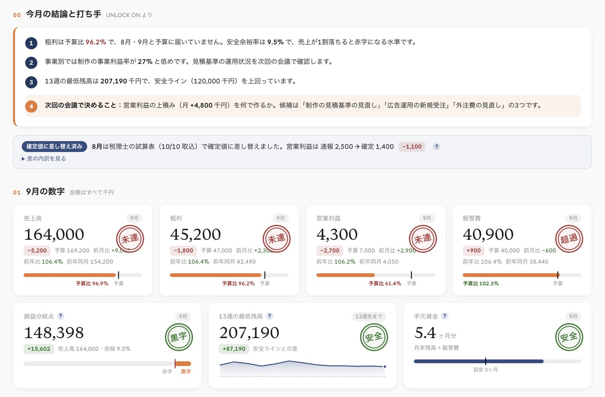

年商10億を超えた社長へ
AI経営管理 ＝ 御社の、社外の経営管理室
経営管理を、
まるごとAI化。
CFOや経営企画が不在でも、無理に採用しなくても大丈夫。
その役割を、代わりに担います。
UNLOCK ON
- ダッシュボード
- 予実PL
- 資金繰り表
- 3か月資金繰り
- 経営KPI
- 会議・ToDo
経営ダッシュボード
9月 速報・10/7 更新営業利益の年間着地見込み（今のペース）
51.5百万円目標まで −18.5
0年間目標 70.0（単位：百万円）
月+4.8百万円の上積みを、何でつくるか
What
数字の集計から、実行管理まで。
- 01集計バラバラの数字を、
毎月AIで集めて整える - 02分析予算比・前年比・着地見込み、
原因と打ち手まで - 03経営会議資料・論点・記録まで
準備して、短く決める - 04実行管理決めたことをToDoにし、
期限まで追いかける
社長は、数字を集める人から、
次の一手を決める人へ。
Movie
2分でわかる、AI経営管理
Issues
この質問に、すぐ答えられますか。
- 損益分岐点は、いくらですかあと何%売上が落ちたら赤字になるか
- 先月の数字が分かるのは、いつですか試算表が届くのは翌月末。そのころ、次の月はもう終わりかけている
- 3か月先の資金残高は、読めていますか黒字でも、お金が足りなくなるタイミングはないか
- どの事業・部門が、本当に儲かっていますか売上ではなく、事業ごとの利益と生産性で見えているか
- 今、追加で投資できる上限はいくらですか採用・出店・広告に、どこまで踏み込めるか
数字は、見て終わりじゃない。会議は、して終わりじゃない。
経営のPDCA、毎月回せていますか。
How it works
専用フォルダに、入れるだけ。
必要な情報やファイルを、御社専用のフォルダに入れていただくだけ。AIが集計・分析し、御社専用の経営OSに数字がそろいます。
月末締めから5営業日で、数字がそろう。
- 経理のご担当者で大丈夫社長が資料を集める必要はありません
- 集計表がなくても大丈夫入れるためのテンプレートをご用意します
- 試算表を待たないよくある月次より、約20日早くそろいます
Monthly
会社の今と、この先の着地が、ひと目でわかる。

- 01経営ダッシュボード今のペースでの着地と、目標までに必要な上積み
- 025つの管理表経営数値サマリー・予実PL・資金繰り表・3か月資金繰り・経営KPI
- 03予算比・前年比・前月比まで自動で事業別の利益や損益分岐点も、毎月更新
- 04投資余力の目安守りのラインと、攻めの上限を2段で表示
- 05今月の結論と打ち手数字の変化と原因、打つべき手をコメントで添えます
Meeting
会議の準備は、AIにお任せ。会議は短く。
- 会議の2営業日前会議資料ダッシュボードと論点3つ、
決めたいことを事前にお届け - 毎月 90〜120分経営会議論点整理と記録は UNLOCK ON。
決めるのは社長 - 会議の翌営業日決定事項とアクション表担当と期限つき。
期限アラートも自動で設定
90日ロードマップを、毎月アップデート。会議で決めたことを反映し、0〜30日・31〜60日・61〜90日の打ち手と担当を、毎月見直します。
All in
ここまで、AIと私たちに、すべてお任せ。
AIと経営のプロが、毎月まわします。
毎月の
数字
- 経営
ダッシュボード - 予実・資金繰り
KPIの管理表 - 5営業日で
数値速報 - 投資余力の
目安 - 今月の結論
と打ち手
毎月の
運用
- 会議資料は
2営業日前 - 経営会議の
論点整理 - 決定事項と
アクション表 - 進捗・期限管理
アラート設定 - 90日
ロードマップ
社長が全部見なくても、会社が数字で回る。
- 任せられる幹部が育つ
- 次の投資に動ける
Compare
経営企画を1人採用するより、早く確実に回ります。
| 経営企画を1人採用 | AI経営管理（社外の経営管理室） | |
|---|---|---|
| 動き出すまで | 採用3〜6か月＋独り立ちに半年 | 診断1か月、2か月目から月次が回る |
| 判断の経験 | 本人の経験次第 | 経営・再生・売却を経験した代表が会議に入る |
| 数字の速さ | 仕組みづくりから本人任せ | 月末締めから5営業日で速報 |
| 辞めたとき | 採用からやり直し、ノウハウも抜ける | 仕組みと記録は御社に残る |
| 社長の手間 | 採用・育成・評価が必要 | ファイルを専用フォルダに入れるだけ |
Why now
これからの経営は、AX。
→
次の成長の武器は、正しい数字を、いち早く。
その第一歩は、経営管理のAI化から。
Founder
このAI経営管理は、代表の経験から生まれました。
FOUNDER
創業者IT人材会社を創業。ベストベンチャー100に選出され、2018年に株式売却CEO
経営者美容クリニック4院の企業再生。2期連続で過去最高売上、営業利益を数億円改善CxO
COO・CFO・CMO 代行売上96億円の不動産・建築会社で、経営管理・財務・新規事業を担当
正しい数字を、いち早く経営判断に。
未来への機会損失を、なくす。
UNLOCK ON 代表 植田 昭洋
How to start
始め方は、3ステップ。
STEP 1
UNLOCK経営診断無料・回答約5分27問の回答だけで、6領域のスコアと会社の伸びしろをレポートにします。機密資料の提出は不要です。
無料で診断するSTEP 2
AI経営診断約1か月実際の数字と社長へのインタビューから、課題の根っこを特定し、90日ロードマップをお渡しします。
STEP 3
AI経営管理毎月御社専用の経営OSを構築し、毎月の速報・経営会議・実行管理まで、社外の経営管理室として回します。
FAQ
よくあるご質問
経理担当が1人しかいませんが、大丈夫ですか
大丈夫です。ご担当者には、決まったファイルを専用フォルダに入れていただくだけです。集計や分析、資料づくりは当社が行います。
集計表や管理資料が、まだ整っていません
集計表がなくても始められます。入れるためのテンプレートをご用意し、最初の構築の中で整えます。
顧問税理士とは、どう役割を分けますか
月次の速報は当社が先に出し、税理士の確定値が出たら差し替えます。税務の判断や申告は、これまでどおり顧問税理士にお任せください。
料金はいくらですか
会社の規模と事業の数によって変わります。まずは無料のUNLOCK経営診断の結果をもとに、御社に合う進め方と費用をご案内します。
どんな会社に向いていますか
年商10億円を超え、CFOや経営企画を置いていない会社です。成長に管理が追いつかない、数字が出るのが遅い、会議で決めたことが進まない、と感じている社長に向いています。
まずは、御社の今を、
無料で見える化。
UNLOCK経営診断は、回答約5分。機密資料の提出は不要です。
無料のUNLOCK経営診断を受けるUnlock potential. Turn value on.